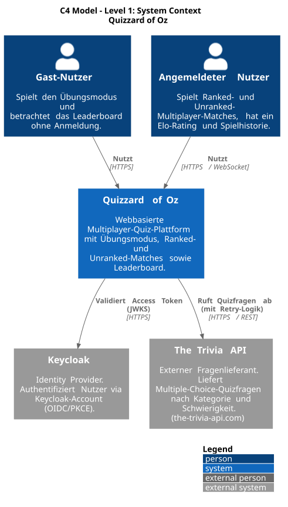
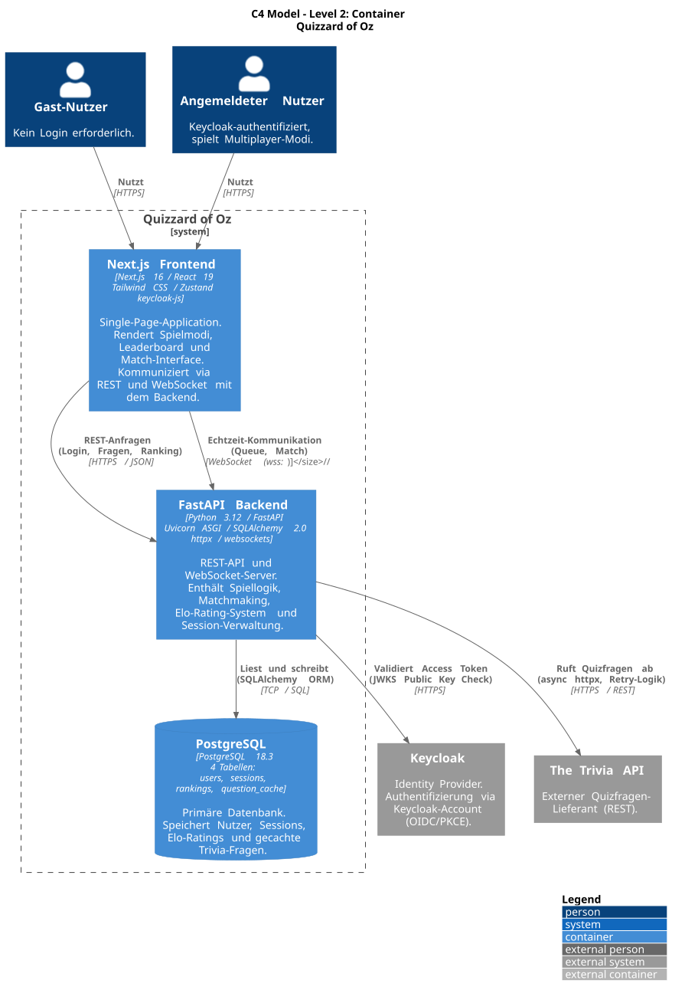
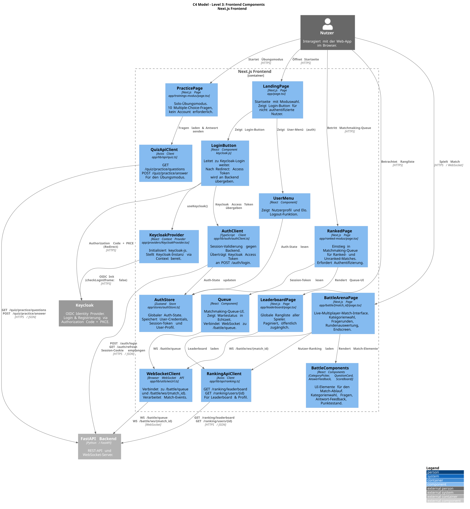
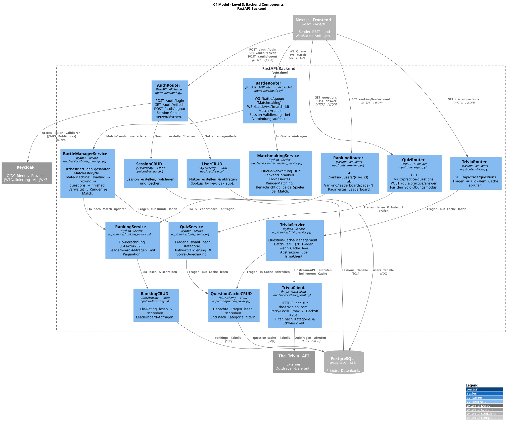
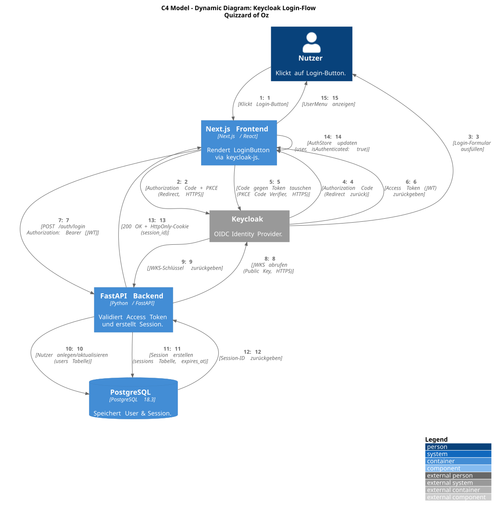
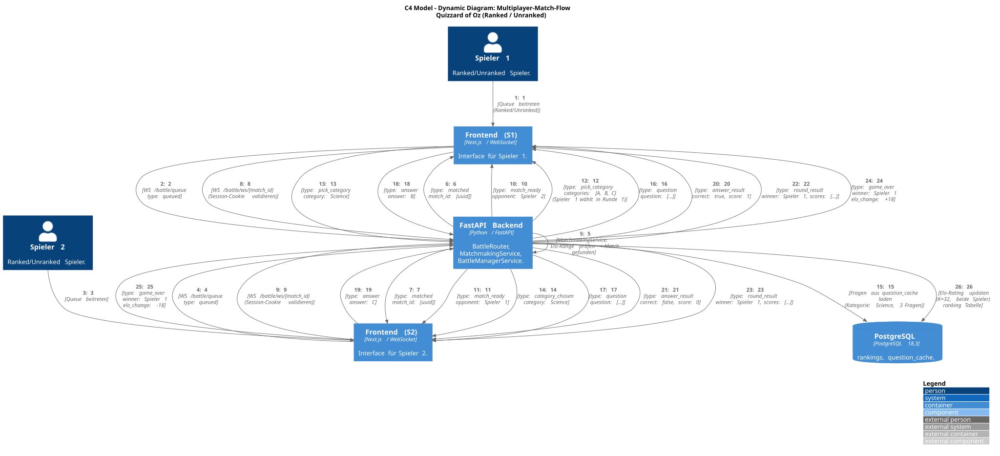

Architecture¶
Introduction and Goals¶
Quizzard of Oz is a web-based quiz application for solo practice and real-time competitive play. The product combines a Next.js browser frontend, a FastAPI backend, Keycloak-based identity, PostgreSQL persistence, a local trivia-question cache, and WebSocket-driven battle sessions.
The project was developed in the Software Quality and Security module at Technische Hochschule Rosenheim.
Requirements Overview¶
Requirement |
Current Implementation |
|---|---|
Practice quiz |
The frontend page |
Ranked battle |
Authenticated users enter the ranked queue through |
Shared battle UI |
The |
Leaderboard |
Public leaderboard and search pages call |
Authentication |
Browser login uses Keycloak OIDC/PKCE through |
WebSocket authorization |
Queue and battle WebSockets validate the backend session cookie during the handshake before accepting the connection. |
Ranking |
The backend stores one ranking per user, applies Elo updates with |
Question supply |
The backend retrieves questions from The Trivia API |
Deployment for local and CI use |
Docker Compose starts PostgreSQL, Keycloak, backend, and frontend. GitHub Actions build, test, analyze, and publish container images. |
Quality Goals¶
Priority |
Quality Goal |
Concrete Scenario |
|---|---|---|
1 |
Responsive gameplay |
During an active battle, both players receive question, answer acknowledgement, reveal, round result, and game-over events without waiting for a live trivia request on every question. |
2 |
Security |
Ranked queue and battle sockets reject clients without a valid backend session cookie. Backend login accepts only Keycloak tokens that can be verified through the realm JWKS. |
3 |
Maintainability |
A developer can locate a feature by layer: pages/components in the frontend, routers in |
4 |
Reliability |
If the external trivia provider is unavailable or returns invalid data, the backend maps the failure to explicit 502/503 responses or aborts the battle with a controlled WebSocket close. |
5 |
Testability |
Backend pytest tests cover auth, ranking, trivia, WebSocket auth, matchmaking, and battle logic. Frontend Vitest, architecture, security, and Playwright tests cover UI flows and boundaries. |
Stakeholders¶
Stakeholder |
Expectations |
Architectural Interest |
|---|---|---|
Players |
Fast quiz interaction, clear ranking, reliable login, stable battle state. |
Low latency, fair scoring, predictable session behavior, useful error states. |
Development team |
Small-team codebase that can be changed safely. |
Clear modules, explicit interfaces, repeatable local setup, CI feedback. |
Reviewers and instructors |
Evidence that implementation and documentation reflect course quality and security goals. |
Traceable requirements, decision records, risk visibility, test coverage. |
Operators or maintainers |
Simple service startup and diagnosable failures. |
Docker Compose, health checks, environment variables, logs, persistence boundaries. |
Constraints¶
Technical Constraints¶
Constraint |
Architectural Impact |
|---|---|
Frontend uses Next.js 16, React 19, TypeScript, Tailwind CSS v4, Zustand, and |
UI behavior is organized around App Router pages, client components, browser WebSockets, and environment-provided public URLs. |
Backend uses Python 3.12, FastAPI, Uvicorn, SQLAlchemy 2, Pydantic, PyJWT, httpx, and PostgreSQL. |
HTTP APIs, WebSocket endpoints, validation, ORM models, and service classes form the backend architecture. |
Authentication is delegated to Keycloak 26. |
The application does not store user passwords. It stores Keycloak subject identifiers and backend sessions. |
Application sessions are backend-managed. |
Login creates a |
Battle state is held in backend process memory. |
Active matches, queue entries, timers, WebSocket connections, round scores, and selected categories are lost on backend restart and cannot be shared across multiple backend replicas without further work. |
PostgreSQL schema is created through |
No migration tool is visible. Schema changes require extra discipline and are a technical debt item for production use. |
Trivia questions come from an external provider. |
The backend must handle upstream timeouts, retryable status codes, invalid payloads, and cache refill limits. |
Frontend WebSocket URLs are derived from |
The client rewrites |
Organizational Constraints¶
Constraint |
Architectural Impact |
|---|---|
The project is built by a small course team. |
The system remains a modular monolith plus frontend rather than many independently deployed services. |
No dedicated operations budget is visible. |
The stack relies on open-source technologies and simple container orchestration. |
CI and quality gates are part of the project workflow. |
Changes should keep pytest, Vitest, Playwright, architecture tests, SonarCloud, and Docker builds working. |
Documentation is published via Read the Docs. |
Markdown must remain compatible with Sphinx/MyST and the existing Furo documentation setup. |
Legal and Regulatory Constraints¶
Constraint |
Architectural Impact |
|---|---|
User-related data is stored in PostgreSQL. |
The system stores only data needed for login, sessions, rankings, and match history: Keycloak subject, email, username, sessions, rankings, and match results. |
Session data is security-sensitive. |
Cookies must be HttpOnly, appropriately scoped, and secure in production. Logs must avoid tokens, passwords, and session identifiers. |
Keycloak is self-hosted open-source software. |
The realm configuration in |
The Trivia API has external terms and availability limits. |
Caching and retry settings reduce repeated upstream calls. Commercial or heavier use would require checking the provider plan and terms. |
Open-source dependencies have license obligations. |
Dependency manifests and lock files must remain reviewable before adding libraries. |
Context and Scope¶
Business Context¶
Actor or System |
Interaction with Quizzard of Oz |
|---|---|
Guest player |
Uses public pages such as the landing page, practice mode, and leaderboard without a backend login session. |
Registered player |
Logs in through Keycloak, receives a backend session, enters ranked battle, and appears in rankings after match results. |
Keycloak |
Provides identity through OIDC/PKCE and exposes JWKS for backend token verification. |
The Trivia API |
Supplies multiple-choice questions that the backend normalizes and caches. |
PostgreSQL |
Stores application users, backend sessions, rankings, cached questions, and match result history. |
GitHub Actions |
Runs build, test, E2E, architecture, SonarCloud, Docker, and diagram-generation workflows. |
SonarCloud |
Receives backend and frontend coverage reports and reports quality metrics. |
Read the Docs |
Builds and publishes Sphinx documentation. |
GHCR |
Receives backend and frontend Docker images from the Docker workflow. |
Technical Context¶
Interface |
Mechanism |
Data Exchanged |
|---|---|---|
Browser to frontend |
HTTP/HTTPS |
Next.js pages, JavaScript, CSS, static assets, manifest, favicon. |
Frontend to backend REST |
HTTP JSON through |
Login, refresh, logout, practice questions, answer checks, trivia batches, rankings, leaderboard search. |
Frontend to backend queue |
WebSocket |
Session-cookie-authenticated matchmaking. Messages include |
Frontend to backend match |
WebSocket |
Live match protocol: category picking, questions, answer submission, answer acknowledgement, |
Frontend to Keycloak |
OIDC Authorization Code + PKCE via |
Login, registration, access token acquisition, logout redirect. |
Backend to Keycloak |
HTTPS JWKS lookup |
Public keys for verifying Keycloak access tokens. |
Backend to PostgreSQL |
SQLAlchemy over PostgreSQL protocol |
CRUD for users, sessions, rankings, cached questions, and match results. |
Backend to The Trivia API |
HTTPS JSON via httpx |
|
Configuration |
Environment variables and Docker build args |
Database credentials, CORS origins, session cookie settings, Keycloak URL/realm/client ID, Trivia API settings, API base URL, build commit. |
System Boundary¶
Quizzard of Oz contains the Next.js frontend and FastAPI backend. PostgreSQL and Keycloak are part of the local/container deployment but remain separate runtime services. The Trivia API, GitHub Actions, SonarCloud, GHCR, and Read the Docs are external supporting systems.
Existing C4/PlantUML sources live in docs/c4. Generated SVGs live in docs/images. The diagrams below are generated visualizations; the prose in this document describes the exact current implementation where a generated diagram still contains older wording.
System Context Diagram¶

Source: docs/c4/c1_context.puml
Solution Strategy¶
Keep the product as a small modular web system: one Next.js frontend, one FastAPI backend, one PostgreSQL database, and one Keycloak identity service.
Use REST APIs for request/response interactions such as login, refresh, practice questions, answers, rankings, and leaderboard search.
Use WebSockets for battle queue and match runtime events because both players need low-latency, bidirectional state updates.
Delegate identity to Keycloak and keep application sessions in PostgreSQL-backed HttpOnly cookies so frontend JavaScript does not need direct access to the backend session identifier.
Keep battle orchestration in
BattleManagerand matchmaking inMatchmakingService; both are process-local and protected with asyncio locks for concurrent WebSocket actions.Cache normalized trivia questions in PostgreSQL to decouple most gameplay from live upstream calls and reduce latency/rate-limit pressure.
Use SQLAlchemy models and CRUD repositories for persistent data access; use service classes for game, trivia, ranking, and auth-related behavior.
Keep quality feedback automated through backend pytest, frontend Vitest, architecture tests, security tests, Playwright E2E tests, SonarCloud, and Docker workflows.
Building Block View¶
Whitebox Overall System¶
Building Block |
Responsibility |
Main Technologies |
|---|---|---|
Next.js frontend |
Player UI, route handling, Keycloak client initialization, auth state, theme state, REST clients, WebSocket clients, battle rendering. |
Next.js, React, TypeScript, Zustand, keycloak-js, Axios, Tailwind CSS. |
FastAPI backend |
REST API, WebSocket server, auth/session handling, matchmaking, battle state machine, ranking, trivia integration, persistence access. |
FastAPI, Uvicorn, SQLAlchemy, Pydantic, PyJWT, httpx, websockets. |
PostgreSQL database |
Durable data for users, sessions, rankings, question cache, and match result history. |
PostgreSQL 18 in Docker Compose, PostgreSQL 16 in CI E2E service. |
Keycloak |
Identity provider and realm configuration for login/registration. |
Keycloak 26.2.5, imported |
Trivia provider |
External question source. |
The Trivia API |

Source: docs/c4/c2_container.puml
Frontend Building Blocks¶
Block |
Implementation |
Responsibility |
|---|---|---|
App layout |
|
Wraps the app in theme and Keycloak providers, renders navigation, validates required Keycloak public config. |
Landing page |
|
Shows product entry, ranked battle CTA, practice CTA, and top 3 leaderboard preview. |
Practice mode |
|
Loads 10 practice questions and submits answer checks to the backend. |
Ranked mode |
|
Gates ranked queue by frontend auth state and opens WebSocket |
Battle arena |
|
Connects to |
Auth client |
|
Initializes Keycloak, exchanges Keycloak token for backend session, refreshes/logout sessions, stores display credential. |
Ranking client |
|
Loads leaderboard and username search results. |
Architecture tests |
|
Enforces no circular dependencies, no component imports from API routes, and no production imports from test files. |

Source: docs/c4/c3_frontend_components.puml
Backend Building Blocks¶
Block |
Implementation |
Responsibility |
|---|---|---|
Application entry |
|
Creates the FastAPI app, configures CORS, creates DB tables, includes routers, exposes |
Settings |
|
Loads CORS and Trivia settings with Pydantic, loads DB environment variables, creates SQLAlchemy engine/session factory. |
Auth router |
|
Verifies Keycloak bearer tokens, creates users, creates/extends/deletes backend sessions, sets and clears session cookies. |
WebSocket auth |
|
Validates session cookie, session expiry, and user existence before accepting queue or battle sockets. |
User router/CRUD |
|
Creates and reads users. Current create path uses username as |
Quiz router/service |
|
Serves practice questions and checks practice answers through the trivia service. |
Trivia router/service/client |
|
Parses filters, fetches/cache-refills questions, validates payloads, exposes cached internal question IDs to clients. |
Battle router |
|
Exposes queue and battle WebSocket endpoints and delegates to matchmaking/battle services. |
Matchmaking service |
|
Maintains in-memory queue, reads player Elo, matches closest eligible pair, expands allowed Elo delta over wait time, returns a match ID. |
Battle manager |
|
Holds in-memory match state, enforces phases, handles category selection, questions, timers, scoring, surrender, disconnect, forfeit, game over. |
Ranking service |
|
Applies Elo updates, records match results, computes leaderboard pages and shared ranks on ties. |
CRUD/models |
|
Encapsulate SQLAlchemy access to persistent tables. |

Source: docs/c4/c3_backend_components.puml
Persistent Data Model¶
Table |
Purpose |
Important Fields |
|---|---|---|
|
Local application user linked to Keycloak identity. |
|
|
Backend-managed application sessions. |
|
|
One ranking row per user. |
|
|
Normalized local copy of Trivia API questions. |
|
|
Match history entry for ranking outcomes. |
|
Active queue entries and active battle state are not stored in PostgreSQL. They live in memory inside MatchmakingService and BattleManager.
Runtime View¶
Runtime Overview Diagram¶

This existing flow diagram summarizes the intended ranked battle lifecycle. The detailed runtime descriptions below are authoritative for the currently implemented WebSocket event names and persistence behavior.
Login and Session Flow¶

Source: docs/c4/c4_dynamic_login.puml
The user clicks the login button in the frontend.
keycloak-jsruns the Keycloak Authorization Code + PKCE flow.The frontend receives a Keycloak access token.
The frontend calls
POST /auth/loginwithAuthorization: Bearer <token>.The backend verifies the token through Keycloak JWKS and reads the
subclaim.The backend finds or creates a
usersrow usingkeycloak_sub.The backend creates a
sessionsrow withexpires_at.The backend returns username/email/expiry and sets the configured HttpOnly session cookie.
The frontend stores display credentials in Zustand; the session cookie remains browser-managed.
Refresh uses GET /auth/refresh, validates the existing cookie, extends expiry, and returns the same response shape. Logout uses POST /auth/logout, deletes the session if present, and clears the cookie.
Practice Quiz Flow¶
PracticeQuizcallsGET /quiz/practice/questions.QuizServicerequests 10 questions fromTriviaQuestionService.The trivia service tries to serve matching cached questions first.
If cache is insufficient,
TriviaApiClientfetches/v2/questions, retries configured transient failures, and the service normalizes valid items.Normalized questions are upserted into
question_cache.The frontend receives question IDs, text, answers, and categories, but not
correct_answer.For each answer, the frontend calls
POST /quiz/practice/answer.The backend compares the answer with the cached correct answer and returns correctness plus correct answer.
Trivia Cache Refill Flow¶
The REST trivia endpoint accepts
limit,categories, anddifficulties.Unsupported query parameters, repeated
limit, invalid limits, unsupported difficulties, andqueryare rejected with 400.The cache repository returns random matching questions, excluding IDs where required by battle flows.
On cache miss, the client fetches from The Trivia API with configured timeout, retry count, backoff, and batch size.
Invalid upstream payload items are skipped; if all items are invalid, the backend raises a payload error.
If the cache still cannot satisfy the requested limit after refill attempts, the backend returns 503 for HTTP callers or aborts an active battle setup.
Matchmaking Flow¶
An authenticated player opens WebSocket
/battle/queue.The backend validates the session cookie before accepting.
MatchmakingServicereads the player’s current ranking and queues the WebSocket with Elo, queue time, and sequence number.If no eligible opponent exists, the client receives
{"type": "queued"}and stays connected.Matching prefers the closest Elo pair. The initial allowed Elo delta is 75 and grows by 50 every 5 seconds.
Once two players match, both receive
{"type": "matched", "match_id": "<uuid>"}.The clients navigate to
/battle/{match_id}and open/battle/ws/{match_id}.
Battle Runtime Flow¶

Source: docs/c4/c4_dynamic_match.puml
Each player connects to
/battle/ws/{match_id}with a valid session cookie.The first player receives
waiting_for_opponent; the second player starts the match.The backend sends
match_readyto both players and randomly chooses the first category picker.At the start of each round, the backend offers three categories to the picker and sends
waiting_for_categoryto the other player.The picker sends
{"type": "pick_category", "category": "..."}.The backend validates picker and category, loads three questions for that category, tracks used question IDs, and sends
category_chosen.For each question, both players receive
question. The server starts a 20-second answer deadline.A player sends
{"type": "answer", "question_id": "...", "answer": "..."}.The backend acknowledges only that player with
answer_received; the correct answer is hidden until both players answer or the timer expires.The backend sends
question_resultto both players with correctness, correct answer, submitted answer, score this round, and reveal duration.After the reveal delay, the backend advances to the next question or sends
round_result.First player to 3 round wins wins the best-of-five match.
game_overis sent to both players,apply_match_resultupdates rankings, and amatch_resultsrow is recorded.
Surrender and Disconnect Flow¶
If a player sends surrender or disconnects during picking or questions, the active match becomes a forfeit. The remaining player receives opponent_forfeit, Elo/win/loss totals are updated, match_results.ended_as is set to forfeit, and in-memory match state is removed. Disconnects before the match starts do not count as forfeits.
Leaderboard Flow¶
The landing page and leaderboard page call
/ranking/leaderboard?page=N.Search calls
/ranking/leaderboard/search?username=<query>&page=N.The backend joins rankings to users, orders by Elo, win/loss ratio, last win time, update time, and user ID.
Fully tied leaderboard entries share the same rank.
The response contains
page,page_size,total_players, and entries with rank, user, Elo, wins, losses, total matches, and last win time.
Deployment View¶
Local Docker Compose Deployment¶
Service |
Image or Build |
Ports |
Health / Dependency |
|---|---|---|---|
|
|
|
|
|
|
|
TCP health check; backend waits for healthy Keycloak. Imports |
|
Built from |
|
|
|
Built from |
|
Depends on healthy backend. |
The backend image runs as a non-root appuser. The frontend image uses a multi-stage Next.js standalone build and runs as a non-root nextjs user with read-only application files after build.
Configuration¶
Area |
Variables |
|---|---|
Database |
|
Session cookie |
|
Keycloak |
Backend: |
Frontend/backend routing |
|
Trivia API |
|
Build metadata |
|
CI/CD and Documentation Infrastructure¶
Workflow |
Responsibility |
|---|---|
|
Installs pnpm dependencies on Node 22 and runs |
|
Installs Python 3.12 dependencies and runs pytest with branch coverage and XML output. |
|
Runs linting, Vitest coverage, and architecture tests. |
|
Starts PostgreSQL service and Keycloak container, then runs Playwright with frontend and backend web servers. |
|
Downloads coverage artifacts and runs SonarCloud analysis. |
|
Builds and pushes backend/frontend images to GHCR for changes on |
|
Regenerates PlantUML SVG diagrams for |
Read the Docs |
Builds Sphinx documentation from |
Production Deployment Open Questions¶
No production hosting target, ingress, TLS termination, secrets manager, backup strategy, log aggregation, or scaling policy is visible in the repository. These must be defined before production use.
Cross-cutting Concepts¶
Authentication and Sessions¶
Keycloak owns identity. The backend owns application sessions. The frontend sends the Keycloak access token only to POST /auth/login; after that, session continuity relies on the backend session cookie. HTTP APIs that need the session use browser credentials, and WebSocket handshakes validate the same cookie.
Important session properties are environment-controlled: cookie name, SameSite mode, Secure flag, domain, and expiry. Production deployments should set COOKIE_SECURE=true and a domain appropriate to the deployed frontend/backend origin.
Real-Time Communication¶
The battle protocol is server-authoritative. The client sends only category picks, answers, and surrender. The backend owns phase transitions, timers, scoring, round wins, game-over conditions, forfeit handling, and ranking updates.
State Management¶
Persistent state is stored in PostgreSQL. Transient battle state is held in memory as MatchState objects. asyncio.Lock protects state mutations inside each match, and the matchmaking queue has its own lock.
Ranking¶
Ranking uses Elo with K_FACTOR = 32. A normal match and a forfeit both update winner and loser ratings, wins/losses, and total matches. Forfeits are distinguished in match_results.ended_as.
Question Caching¶
The backend stores normalized question content in question_cache and exposes internal cached UUIDs to clients. Upstream question IDs remain internal as external_id. The service filters by category and difficulty, samples random cache entries, avoids reused question IDs during one match, and refills cache batches when needed.
Error Handling¶
Trivia failures are mapped to explicit HTTP errors: invalid client filters return 400, invalid upstream payloads return 502, upstream unavailability or insufficient questions return 503. Battle question-preparation failures close sockets with internal close code 1011 and a generic reason.
Logging¶
Backend logging is configured in main.py with timestamped log formatting for uvicorn loggers. Battle and trivia services log operational events without intentionally logging tokens, passwords, or session identifiers.
Frontend Boundaries¶
Frontend architecture tests enforce:
no circular dependencies in
app/no imports from
app/componentsdirectly intoapp/apino production source imports from test files
Testing Strategy¶
Backend tests cover routers, CRUD, services, settings, authentication, WebSocket auth, matchmaking, ranking, battle state, and trivia integration. Frontend tests cover unit, integration, security, architecture, and E2E scenarios. Playwright E2E runs sequentially because shared backend state, fixed test accounts, and WebSocket queues can create cross-test interference.
Architecture Decisions¶
Detailed ADRs are documented in Architecture Decisions. The most important accepted decisions are:
ADR |
Decision |
Architectural Effect |
|---|---|---|
ADR 1 |
Use Next.js for the frontend. |
App Router pages and React components form the UI architecture. |
ADR 2 |
Use Python with FastAPI for backend services. |
REST and WebSocket interfaces are implemented in one ASGI backend. |
ADR 3 |
Use pnpm for frontend dependency management. |
Frontend CI and Docker builds rely on pnpm lockfile reproducibility. |
ADR 4 |
Use a relational database, specifically PostgreSQL. |
Users, sessions, rankings, cache, and match results are relational tables. |
ADR 5 |
Use SQLAlchemy ORM with Pydantic schemas. |
Data access is encapsulated in models/CRUD while HTTP contracts use typed schemas. |
ADR 6 |
Use WebSockets instead of polling for game communication. |
Battle queue and match runtime use bidirectional WebSocket channels. |
ADR 7 |
Use Keycloak instead of Google OAuth. |
Local/testable login, self-hosted realm import, and backend JWKS verification are part of the architecture. |
Quality Requirements¶
Quality Scenarios¶
Quality |
Scenario |
Current Mechanism |
|---|---|---|
Performance |
A battle round should not wait on a live upstream trivia call for every question. |
Cached questions, category options from cache, batch refill, random cache selection. |
Security |
A user without a valid session tries to join the queue. |
WebSocket auth closes with 4001 for missing/invalid/not-found sessions and 4003 for expired sessions. |
Security |
A forged Keycloak token is sent to |
PyJWT/JWKS verification raises an error and the endpoint returns 401. |
Reliability |
One player closes the browser during an active battle. |
Backend records a forfeit win for the remaining player and cleans up match state. |
Reliability |
The Trivia API returns malformed payload items. |
Invalid items are skipped; all-invalid payloads become a controlled upstream payload error. |
Maintainability |
A developer changes battle UI behavior. |
Battle phase UI is split into |
Testability |
A frontend component accidentally imports an API route. |
Dependency-cruiser architecture test fails. |
Operability |
Docker Compose starts services locally. |
PostgreSQL, Keycloak, and backend health checks order startup before frontend availability. |
Acceptance Checks¶
Backend tests:
python -m pytest tests -qfrombackend/.Frontend lint:
pnpm lintfromfrontend/quizzard-of-oz.Frontend coverage:
pnpm test:coveragefromfrontend/quizzard-of-oz.Frontend architecture tests:
pnpm test:archfromfrontend/quizzard-of-oz.E2E tests:
pnpm test:e2ewith PostgreSQL, Keycloak, backend, and frontend available.Documentation build:
python -m sphinx -b html docs docs/_build/html.
Risks and Technical Debts¶
Risk or Debt |
Impact |
Possible Mitigation |
|---|---|---|
In-memory queue and battle state |
Backend restart drops active matches; multiple backend replicas cannot share matches. |
Persist match state or introduce shared state/pub-sub before horizontal scaling. |
No migration tooling |
Schema changes rely on |
Introduce Alembic migrations and document schema rollout. |
Production deployment unspecified |
TLS, secrets, backups, log aggregation, and scaling are open. |
Add deployment architecture, environment profiles, and operational runbook. |
Trivia API dependency |
Cache misses can fail if upstream is unavailable, invalid, or rate-limited. |
Pre-warm cache, monitor upstream errors, define fallback behavior. |
Documentation drift |
Planning docs and generated C4 diagrams contain some planned or older details. |
Treat |
Cookie/CORS configuration sensitivity |
Wrong domain, SameSite, Secure, or CORS settings can break login or weaken security. |
Add environment-specific examples and deployment checks. |
Limited observability |
Logs exist, but no metrics/tracing stack is visible. |
Add structured metrics for queue length, active matches, upstream failures, and WebSocket close codes. |
User-created route ambiguity |
|
Restrict, remove, or document the endpoint if it is only for tests/admin setup. |
Frontend WebSocket env mismatch |
README mentions |
Align README/config or implement explicit |
Glossary¶
Term |
Definition |
|---|---|
Battle |
A real-time two-player quiz match run through backend WebSockets. |
Battle Arena |
Frontend screen for an active match at |
CORS |
Cross-Origin Resource Sharing rules configured in FastAPI to allow browser calls from configured frontend origins. |
Elo |
Rating algorithm used to estimate player strength and update rankings after matches. |
Forfeit |
Match ending caused by surrender or active-match disconnect; persisted as |
HttpOnly Cookie |
Browser cookie inaccessible to JavaScript; used for backend application sessions. |
JWKS |
JSON Web Key Set served by Keycloak and used by the backend to verify token signatures. |
Keycloak Realm |
Isolated Keycloak configuration namespace. This project imports the |
Match ID |
UUID generated by matchmaking and used by both players to connect to the same battle WebSocket path. |
Match Result |
Persistent record of winner, loser, end reason, and timestamp in |
OIDC/PKCE |
OpenID Connect Authorization Code flow with Proof Key for Code Exchange, used by the browser login flow. |
Question Cache |
PostgreSQL table containing normalized questions fetched from The Trivia API. |
Queue |
In-memory matchmaking list maintained by |
Ranking |
Persistent per-user Elo and win/loss statistics stored in |
Session |
Backend-managed login record in |
The Trivia API |
External provider used by the backend to fetch quiz questions from |
WebSocket Close Code 4001 |
Custom close code for unauthorized or invalid WebSocket sessions. |
WebSocket Close Code 4003 |
Custom close code for expired WebSocket sessions. |